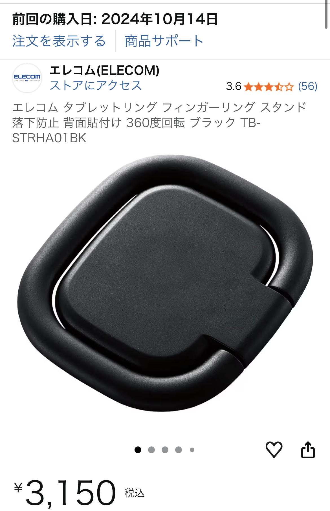

タブレット用回転式リングスタンドを実際に使って分かったメリット・デメリットと比較【強力両面テープタイプ】
※本記事にはアフィリエイトリンクが含まれる場合があります。リンク経由の購入でも追加費用は発生しません。

タブレット用回転式リングスタンドの概要【商品名＋レビューの軸】
本記事では、タブレット用の回転式リングスタンド（強力両面テープタイプ）を実際の口コミ内容をもとにレビューします。 大きめのタブレットでもしっかり支えられるサイズ感で、背面に貼り付けて使うシンプルな構造のスタンドです。
参考になった口コミのポイントは、
・大きいサイズでタブレット用途に合っている
・両面テープが強力で、貼り付け後の安定感が高い
・回転式で、任意の角度に調整できる
・一方で、テープが強力すぎて剥がすのが大変
・無理に剥がすとタブレット側が破損しそうで不安
といった内容でした。
実際に感じたメリット【安定感と角度調整が優秀】
まず大きなメリットは、タブレットをしっかり支える安定感です。サイズが小さいリングだと、10インチ前後のタブレットでは心許ないことがありますが、 大きめのリングスタンドなら、横向きの動画視聴やオンライン会議でもグラつきが少なく、安心して置きっぱなしにしやすいと感じました。
また、回転式で任意の角度に調整できる点も使い勝手の良さにつながっています。机に対してやや高めの角度にすればタイピングがしやすくなり、 低めの角度にすれば動画視聴や電子書籍の閲覧が快適になります。角度固定のスタンドと違い、「今日はこの姿勢で使いたい」という細かな調整がしやすいのは大きな魅力です。
さらに、強力な両面テープによる固定力のおかげで、タブレットを持ち上げてもスタンドが外れにくく、持ち手代わりとしても使いやすいと感じました。 電車内やソファでの利用時に、落下防止の安心感があるのはうれしいポイントです。
タブレット用回転式リングスタンドの詳細・価格をAmazonでチェックする
※リンク先の価格や在庫状況は変動する可能性があります。最新情報はAmazonの商品ページをご確認ください。
強力両面テープのデメリットと注意点【商品名＋デメリットの軸】
一方で、口コミでも触れられていたように、両面テープが非常に強力であること自体がデメリットにもなり得ます。 しっかり貼り付くのは安心ですが、位置を少しずらしたくなったときや、スタンドを別の端末に付け替えたいときに、簡単には剥がせません。
無理に剥がそうとすると、タブレット本体の背面やコーティングが傷つくリスクがあります。 特にガラスコーティングやマットコーティングを施している場合、テープを剥がす際の負荷で表面が欠けたり、塗装が剥がれたりする可能性もゼロではありません。
そのため、タブレット本体に直接貼るのではなく、ケースに貼り付ける使い方を強くおすすめします。 ケースなら、万が一テープ跡が残ってもダメージを最小限に抑えられますし、買い替えも比較的容易です。 また、貼り付け前に位置をよくシミュレーションし、「ここで問題ない」と決めてから一度で貼るのが失敗しにくい使い方です。
他のタブレットスタンドとの比較【商品名＋比較の軸】
タブレットスタンドには、大きく分けて「据え置き型スタンド」「ケース一体型スタンド」「リングスタンド型」の3タイプがあります。 今回の回転式リングスタンドは、持ち運びやすさと落下防止を重視したい人に向いたタイプです。
- 据え置き型スタンド：角度調整の自由度が高く、取り外しも簡単。ただし持ち運びにはかさばりやすい。
- ケース一体型スタンド：見た目がスッキリし、開くだけで自立するモデルも多いが、ケースごと買い替えが必要。
- リングスタンド型：薄くて軽く、持ち手としても使える一方、貼り付け位置の失敗やテープ跡に注意が必要。
特に、「自宅でも外出先でも同じタブレットを使う」「片手持ちの時間が長い」という人には、リングスタンド型の相性が良いと感じました。 逆に、デスクに置きっぱなしで使うことが多い場合は、据え置き型スタンドの方が角度調整の幅が広く、取り外しも簡単なので扱いやすいかもしれません。
こんな人にタブレット用回転式リングスタンドはおすすめ【ジャンル＋おすすめの軸】
以上を踏まえると、タブレット用回転式リングスタンドは次のような人に特におすすめできます。
- 10インチ前後のタブレットを、動画視聴や読書にしっかり活用したい人
- 外出先でもタブレットをよく使い、落下防止の安心感が欲しい人
- 角度を細かく調整しながら、タイピング・読書・動画視聴を切り替えたい人
- ケースに貼り付ける運用ができ、多少のテープ跡は許容できる人
逆に、「頻繁にスタンドを付け替えたい」「タブレット本体に一切跡を残したくない」という場合は、 強力両面テープタイプよりも、マグネット式や据え置き型スタンドの方がストレスなく使える可能性があります。
まとめ：強力テープと回転機構を理解して選べば満足度は高い
タブレット用回転式リングスタンドは、大きめサイズによる安定感と、回転機構による角度調整のしやすさが魅力のガジェットです。 一方で、両面テープが非常に強力なため、貼り直しや取り外しが難しいというデメリットもはっきり存在します。
ケースに貼り付ける、貼る位置を事前にしっかり決める、といったポイントを押さえておけば、 タブレットの使い勝手を一段階引き上げてくれるアイテムになり得ると感じました。 気になった方は、スペックや最新価格、レビュー件数なども含めて一度チェックしてみるとイメージが掴みやすいはずです。
タブレット用回転式リングスタンドをAmazonでチェックする
※本記事の内容は、実際の口コミや一般的な使用シーンをもとにした個人的な見解です。
ご購入の際は、必ずAmazonの商品ページに記載された最新の仕様・注意事項をご確認ください。